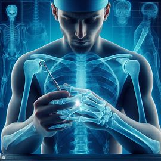
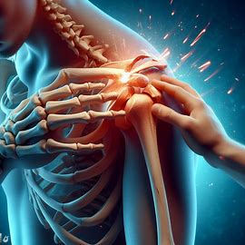
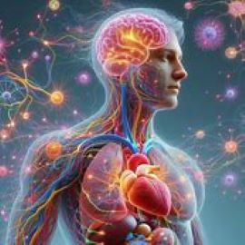
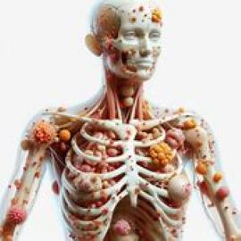
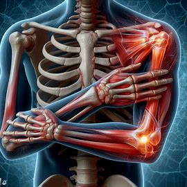
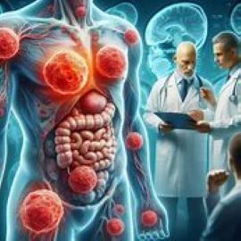

Fracturas:
1. Fracturas: Son pérdidas de la integridad ósea y son algunas de las afecciones patológicas más comunes que afectan a los huesos.
Luxaciones:
2. Luxaciones: Ocurren cuando un hueso se sale de una articulación debido a una lesión. Son más comunes en hombros y dedos.
Enfermedades congénitas:
3. Enfermedades congénitas: Estas son condiciones presentes desde el nacimiento que pueden afectar el sistema músculo esquelético. Un ejemplo son las distrofinopatías (Duchenne y Becker), que son enfermedades neuromusculares caracterizadas por atrofia y debilidad musculares progresivas.
Infecciones:
4. Infecciones: Las infecciones pueden ocurrir en huesos, músculos, articulaciones u otros tejidos blandos.
Lesiones degenerativas:
5. Lesiones degenerativas: Estas son condiciones que resultan del desgaste y el envejecimiento del sistema músculo esquelético. Un ejemplo común es la artritis, que ocurre cuando nuestros tejidos articulares se vuelven menos resistentes al desgaste y comienzan a degenerar.
Lesiones tumorales:
6. Lesiones tumorales: Estas son condiciones en las que se forman tumores en los huesos, músculos, articulaciones u otros tejidos blandos.
En las imágenes se han presentado algunas de las tantas patologías donde el Traumatólogo interviene:
- Fracturas: Las fracturas son rupturas parciales o totales de un hueso, y son una de
las lesiones más comunes que afectan al sistema musculoesquelético. Pueden ser causadas por diversos
factores, como accidentes, caídas, lesiones deportivas o enfermedades que debilitan los huesos, como
la osteoporosis.
- Tipos de fracturas:
- Fractura completa: El hueso se rompe en dos partes.
- Fractura en tallo verde: El hueso se rompe pero no se separa en dos partes, típica en niños.
- Fractura simple: El hueso se quiebra por una parte.
- Fractura conminuta: El hueso se quiebra en más de una parte o se astilla.
- Fractura abierta: El hueso sobresale a través de la piel.
- Fractura cerrada: Hay rotura pero no sobresale el hueso por la piel.
- Fracturas por estrés: Ocurren por presión repetitiva en los huesos.
- Síntomas comunes:
- Dolor intenso
- Hinchazón
- Deformidad en la zona afectada
- Hematomas o sangrado
- Dificultad para mover la parte afectada
- Tratamiento:
- Inmovilización: Uso de yeso o férula para mantener el hueso en su lugar.
- Reducción cerrada: Recolocar el hueso sin hacer una incisión en la piel.
- Reducción abierta: Recolocar el hueso mediante una incisión en la piel.
- Fijación ósea: Uso de clavijas, placas y tornillos de metal para mantener los huesos en su lugar.
- Fisioterapia: Ejercicios para recuperar la movilidad y fortalecer los músculos después de quitar el yeso.
- Prevención:
- Hacer ejercicio regularmente para fortalecer los huesos y los músculos.
- Evitar fumar, ya que reduce la masa ósea.
- Usar equipo de protección durante actividades que aumentan el riesgo de fracturas.
- Luxaciones: Son lesiones en las cuales los huesos que forman una articulación se
desplazan de su posición normal. Esto puede ocurrir debido a un traumatismo, como una caída o un
golpe fuerte, y es más común en articulaciones como el hombro, el codo, los dedos y la cadera.
- Síntomas comunes:
- Dolor intenso
- Deformidad visible de la articulación
- Hinchazón
- Inmovilidad de la zona afectada
- Tratamiento:
- Reducción: Recolocar el hueso en su posición original.
- Inmovilización: Usar un cabestrillo o férula para mantener la articulación inmóvil.
- Rehabilitación: Ejercicios para recuperar la movilidad y fortalecer la articulación.
- Cirugía: En casos graves, puede ser necesaria una intervención quirúrgica.
- Prevención:
- Usar equipo de protección durante actividades deportivas.
- Evitar movimientos bruscos y caídas.
- Mantener una buena condición física para fortalecer músculos y ligamentos.
- Enfermedades congénitas: Son alteraciones que surgen durante la gestación, es
decir, durante la formación del feto. Estas alteraciones pueden afectar cualquier tejido del cuerpo
humano, como huesos, músculos u órganos. Un ejemplo son las distrofinopatías (Duchenne y Becker),
que son enfermedades neuromusculares caracterizadas por atrofia y debilidad musculares progresivas.
- Causas:
- Factores genéticos: Alteraciones en los cromosomas o mutaciones genéticas.
- Factores ambientales: Exposición a productos químicos, infecciones durante el embarazo o consumo de alcohol y drogas.
- Tipos comunes:
- Anomalías estructurales: Como el síndrome de Down, defectos en la formación del tubo neural y trastornos cardíacos.
- Infecciones congénitas: Enfermedades de transmisión sexual como sífilis o clamidia, toxoplasmosis y rubéola.
- Síndrome de alcoholismo fetal: Causado por el consumo de alcohol durante el embarazo.
- Diagnóstico y tratamiento:
- Diagnóstico: Durante las consultas prenatales o en el primer año de vida del bebé.
- Tratamiento: Uso de medicamentos, terapias y, en algunos casos, cirugía.
- Infecciones: Son causadas por microorganismos como bacterias, virus, hongos o
parásitos que invaden el cuerpo y pueden provocar diversas enfermedades. Las infecciones pueden
ocurrir en huesos, músculos, articulaciones u otros tejidos blandos.
- Tipos de infecciones:
- Infecciones bacterianas: Causadas por bacterias, como la faringitis estreptocócica y la tuberculosis.
- Infecciones virales: Provocadas por virus, como el resfriado común y el SIDA.
- Infecciones por hongos: Incluyen enfermedades de la piel como la tiña y el pie de atleta.
- Infecciones parasitarias: Causadas por parásitos, como la malaria.
- Síntomas comunes:
- Fiebre
- Fatiga
- Dolores musculares
- Tos
- Diarrea
- Prevención:
- Lavado frecuente de manos
- Vacunación
- Evitar el contacto con personas infectadas
- Consumo de alimentos y agua en condiciones higiénicas
- Tratamiento:
- Antibióticos para infecciones bacterianas
- Antivirales para infecciones virales
- Antifúngicos para infecciones por hongos
- Antiparasitarios para infecciones parasitarias
- Lesiones degenerativas: Son afecciones crónicas que implican un deterioro
progresivo de los tejidos u órganos afectados. Estas lesiones pueden afectar diversas partes del
cuerpo, como las articulaciones, los huesos y los músculos. Un ejemplo común es la artritis, que
ocurre cuando nuestros tejidos articulares se vuelven menos resistentes al desgaste y comienzan a
degenerar.
- Tipos comunes de lesiones degenerativas:
- Osteoartritis: Desgaste del cartílago articular que provoca dolor y rigidez.
- Espondilosis: Degeneración de los discos intervertebrales y las vértebras de la columna.
- Distrofia muscular: Enfermedad genética que causa debilidad y pérdida progresiva de la masa muscular.
- Síntomas comunes:
- Dolor crónico
- Rigidez
- Pérdida de movilidad
- Inflamación
- Tratamiento:
- Medicamentos para aliviar el dolor y reducir la inflamación
- Fisioterapia para mejorar la movilidad y fortalecer los músculos
- Cirugía: En casos graves, puede ser necesaria una intervención quirúrgica.
- Prevención:
- Mantener un estilo de vida activo y saludable.
- Realizar ejercicios de fortalecimiento muscular y flexibilidad.
- Evitar el sobrepeso.
- Lesiones tumorales: Las lesiones tumorales son crecimientos anormales de células
que pueden ocurrir en cualquier parte del cuerpo. Estas lesiones pueden ser benignas (no cancerosas)
o malignas (cancerosas) y pueden afectar diferentes tejidos y órganos.
- Tipos de lesiones tumorales:
- Tumores benignos: Incluyen osteocondromas, fibromas no osificantes, encondromas y osteomas osteoides.
- Tumores malignos: Como el sarcoma de Ewing, el linfoma óseo y el mieloma múltiple.
- Síntomas comunes:
- Dolor persistente
- Hinchazón
- Deformidad en la zona afectada
- Fracturas patológicas (fracturas que ocurren con poca o ninguna lesión)
- Diagnóstico:
- Historial clínico: Evaluación de los síntomas y antecedentes médicos del paciente.
- Imágenes: Radiografías, resonancias magnéticas (RM) y tomografías computarizadas (TC) para visualizar la lesión.
- Biopsia: Extracción de una muestra de tejido para su análisis en laboratorio.
- Tratamiento:
- Cirugía: Para extirpar la lesión.
- Radioterapia: Uso de radiación para destruir células tumorales.
- Quimioterapia: Uso de medicamentos para eliminar células cancerosas.